A Funcionalidade “Comunicação Ativa” disponibiliza várias maneiras do usuário enviar suas mensagens, de acordo com a estratégia pretendida por sua instituição ou de acordo com a característica das mensagens.
SMS Rápido
O envio rápido é aquela pelo qual o usuário tem necessidade de enviar mensagens de lembretes, avisos, cobranças, etc. para uma pessoa somente ou para um número muito pequeno de contatos.
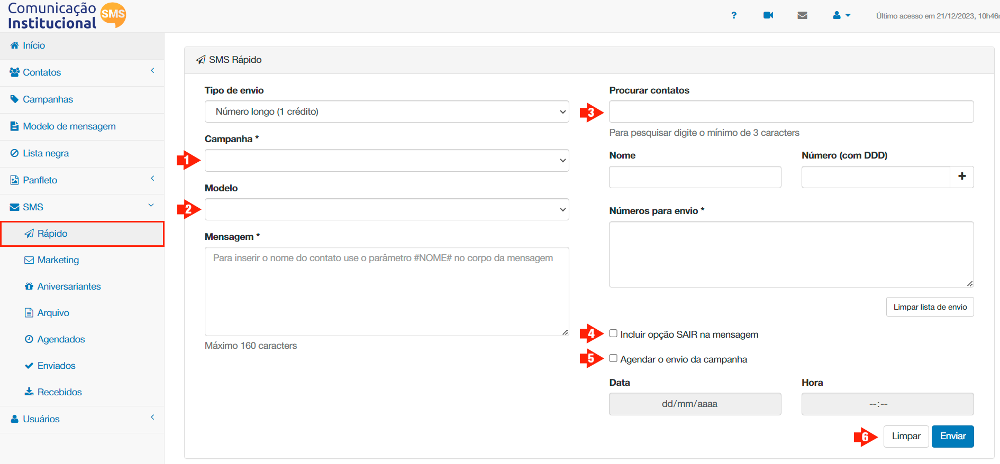
Emitir SMS Rápido
Para isso o usuário deverá selecionar uma campanha de envio, utilizando o menu suspenso apontado pela seta (1), para escolher uma das campanhas que já deverão já ter sido cadastradas anteriormente, conforme descrito no item Campanha, deste manual.
Feito esta escolha, o usuário deverá escolher um modelo de mensagem, utilizando o menu suspenso apontado pela seta (2), isto se modelos de mansagens ja foram cadastrados, conforme rotina apresentada no item Mensagem, também já descrito neste manual. Se não houve mensagem ainda gravada para aquela determinada necessidade de comunicação, o usuário deverá digitar manualmente a mensagem desejada no campo Mensagem, lembrando que a mesma deverá ter no máximo 145 caracteres, incluindo espaços e pontuação.
Se o usuário desejar enviar mensagens com o nome dos contatos, ele pode incluir no texto da mensagem que desejar a expressão #NOME# e esta será substituída pelo primeiro nome do contato na hora de enviar a mensagem com os destinatários selecionados.
OBSERVAÇÃO:
Para enviar mensagens com os nomes dos contatos é aconselhável que haja 100% de confiança na base de dados importada ou coletada pala funcionalidade "Comunicação Ativa", sob pena do destinatário receber a mensagem como o nome grafado errado, ou pior, com outro nome.
Existem duas formas de selecionar Contatos para o envio:
No campo “Procurar Contatos”, assinalado pela seta (1), digitar três letras sequenciais de qualquer parte do nome de um contato já cadastrado, selecionar o contato e clicando no BOX do lado esquerdo do nome do contato, conforme assinalado pela seta (2), clicando no botão ‘Adicionar” para inclui-lo/los na relação de “Números para envio”.
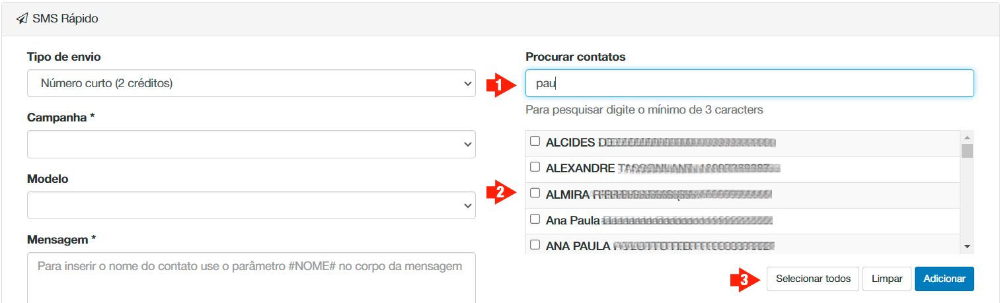
Destinatários cadastrados para SMS Rápido
Digitar um nome de contato que não esteja em seu cadastro no campo “Nome”, conforme indicado pela sdeta (1), informar o número do celular no campo “Número (com DDD)”, sempre com os dois primeiros dígitos representando o código de área e clicar no botão “+”, conforme assinalado pela seta (2), para incluí-lo na relação de “Números para envio”, conforme mostrado pela seta (2).
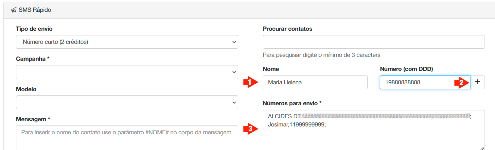
Destinatários não cadastrados para SMS Rápido
OBSERVAÇÃO:
As duas maneiras de se incluir contatos descritas acima podem ser feitas concomitantemente, isto é, pode-se de uma só vez enviar mensagens SMS para contatos cadastrados e destinatários ainda não pertencentes a base de dados.
Ao final da seleção de destinatários para a mensagem, seguem-se os procedimentos subsequentes para enviá-la, conforme abaixo.
Se desejar incluir a opção para o destinatário sair de sua lista de envio, já detalhada na opção OPTOUT, clique no BOX “Incluir opção SAIR da mensagem”, conforme indicado pela seta (4) na figura "Emitir SMS Rápido".
Se desejar agendar o envio para outro dia e/ou horário, clique no BOX “Agendar o envio da campanha”, conforme indicado pela seta (5), escolha a data de envio no campo “Data” e o horário do envio no campo “Hora”, lembrando que estarão bloqueadas as remessas entre o período de 22h00 até 8h00.
Após estas poucas informações, basta clicar no botão ‘Enviar” para que a campanha seja disparada.
SMS Marketing
O SMS marketing é o envio em massa, pelo qual o usuário atinge todos ou um grande numero de contatos, separados por Grupos, de acordo com a estratégia de segmentação de comunicação adotada por sua instituição. A metodologia de remessa segue o padrão da anterior.
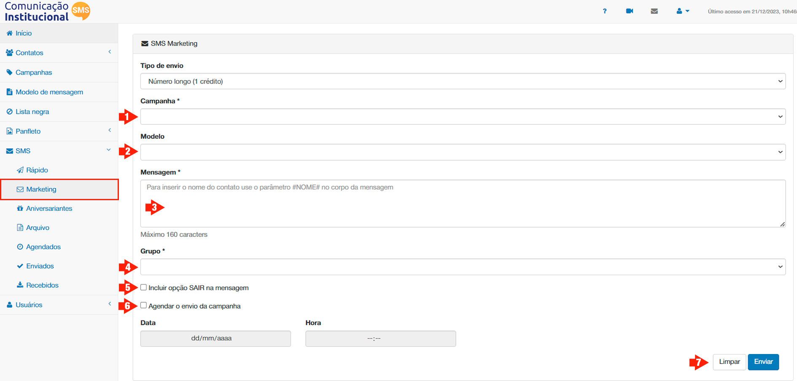
SMS Marketing
O usuário deverá selecionar a campanha de envio, para isso o usuário deverá utilizar o menu suspenso apontado pela seta (1), para escolher uma das campanhas que já deverão ter sido cadastradas anteriormente, conforme descrito no item Campanha, deste manual.
Feita esta escolha, o usuário deverá escolher um modelo de mensagem, utilizando o menu suspenso apontado pela seta (2), isto se modelos de mansagens ja foram cadastrados, conforme rotina apresentada no item Mensagem, também já descrito neste manual. Se não houver mensagem ainda gravada para aquela determinada necessidade de comunicação, o usuário deverá digitar manualmente a mensagem desejada no campo Mensagem, apontado pela seta (3), lembrando que a mesma deverá ter no máximo 145 caracteres, incluindo espaços e pontuação.
Se o usuário desejar enviar mensagens com o nome dos contatos, ele pode incluir no local da mensagem que desejar a expressão #NOME# e esta será substituída pelo primeiro nome do contato na hora de enviar a mensagem com os destinatários selecionados.
A seleção dos destinatários é feita através dos grupos. No menu suspenso “Grupo”, apontado pela seta (4), selecionar o grupo para o quaL desejar enviar a mensagem e clicar em cada seleção o botão “Adicionar”.
Se desejar incluir a opção para o destinatário sair de sua lista de envio, já detalhada na opção OPTOUT, clique no BOX “Incluir opção SAIR da mensagem”, conforme indicado pela seta (4) na figura "SMS Marqueting".
Se desejar agendar o envio para outro dia e/ou horário, clique no BOX “Agendar o envio da campanha”, conforme indicado pela seta (6), escolha a data de envio no campo “Data” e o horário do envio no campo “Hora”, lembrando que estarão bloqueadas as remessas entre o período de 22h00 até 8h00.
Após estas poucas informações, basta clicar no botão ‘Enviar”, conforme indicado pela seta (7), para que a campanha seja disparada.
SMS Aniversariantes
Nesta opção você pode agendar mensagens para todos os aniversariantes do mês, de forma que, no dia do aniversário de cada contato, a mensagem seja enviada automaticamente, exastamente na hora escolhida para a remessa.
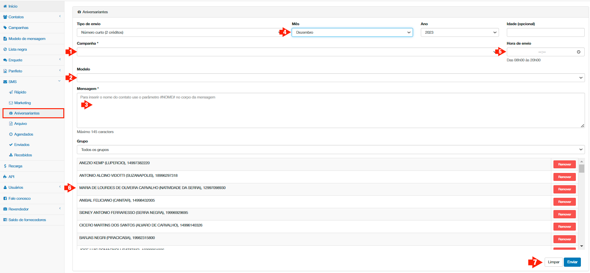
Tela para SMS Aniversário
O usuário deverá selecionar a campanha de envio, para isso o usuário deverá utilizar o menu suspenso apontado pela seta (1), para escolher uma das campanhas que já deverão ter sido cadastradas anteriormente, conforme descrito no item Campanha, deste manual.
Feita esta escolha, o usuário deverá escolher um modelo de mensagem, utilizando o menu suspenso apontado pela seta (2), isto se modelos de mansagens ja foram cadastrados, conforme rotina apresentada no item Mensagem, também já descrito neste manual. Se não houver mensagem ainda gravada para aquela determinada necessidade de comunicação, o usuário deverá digitar manualmente a mensagem desejada no campo Mensagem, apontado pela seta (3), lembrando que a mesma deverá ter no máximo 145 caracteres, incluindo espaços e pontuação.
OBSERVAÇÃO:
Se o usuário desejar enviar mensagens com o nome dos contatos, ele pode incluir no local da mensagem que desejar a expressão #NOME# e esta será substituída pelo primeiro nome do contato na hora de enviar a mensagem com os destinatários selecionados.
Você poderá selecionar aniversariantes de toda a base de dados armazenada na Plataforma, ou de apenas um dos grupos. Para selecionar aniversariantes de apenas um dos grupos, no menu suspenso “Grupo”, apontado pela seta (4), selecione o grupo desejado.
Para escolher os aniversariantes destinatários das mensagens, você precisa escolher um mês no campo Mês, de preferência mês que ainda não começou, certificar-se de que o ano, no campo Ano é o correto, extamente onde a seta (5) sinaliza.
Ao escolher o mês, a funcionalidade "Comunicação Ativa" listará todos os contatos cadastrados, cuja data de aniversário recai no mês selecionado. Pra cancelar o envio de mensagem para um ou mais dos contatos aniversariantes do mês, clicar no botão Remover, conforme aponta a seta (6).
Na opção Hora de envio, indicada pela seta, (7) você poderá determinar exatamente a hora que deseja que as mensagens de cumprimentos pelo aniversário serão enviadas.
Após estas poucas informações, basta clicar no botão ‘Enviar”, conforme indicado pela seta (8), para que a campanha seja finalizada. A funcionalidade "Comunicação Ativa" irá armazenar todas as mensagems e mostrar a quantidade no Widget "Agendados", tendo em vista que cada uma delas foi programada para a data de aniversário de seu respectivo contato, significando que cada mensagem foi agendada para uma data e hora no futuro.
Finalmente, a cada dia do mês escolhido, a funcionalidade "Comunicação Ativa" verificará se existe aniversariante e encaminhará a mensagem agendada para o contato na hora selecionada previamente.
SMS Arquivo
Esta rotina serve para aquelas situações que, por várias razões, não desejam ou não precisam cadastrar seus contatos de forma definitiva na funcionalidade “Comunicação Ativa”.
As razões podem variar, seja porque as remessas de mensagens são sempre para conjunto de contatos totalmente diferentes, não sendo possível agrupá-los em grupos determinados, ou seja para enviar mensagens para contatos que ainda não são sejam residentes na localidade, e portanto não vale a pena cadastrá-los, etc.
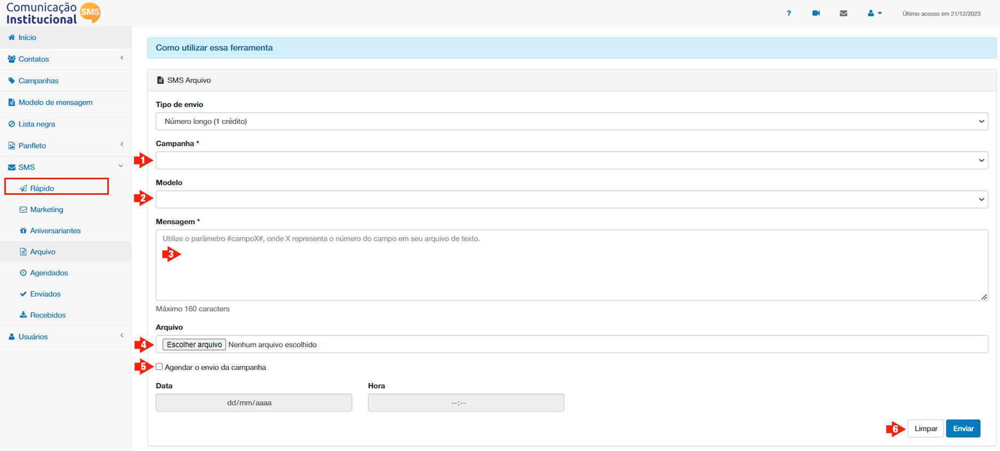
Tela para SMS Arquivo
O usuário deverá selecionar a campanha de envio, para isso o usuário deverá utilizar o menu suspenso apontado pela seta (1), para escolher uma das campanhas que já deverão ter sido cadastradas anteriormente, conforme descrito no item Campanha, deste manual.
Feita esta escolha, o usuário deverá escolher um modelo de mensagem, utilizando o menu suspenso apontado pela seta (2), isto se modelos de mansagens ja foram cadastrados, conforme rotina apresentada no item Mensagem, também já descrito neste manual. Se não houver mensagem ainda gravada para aquela determinada necessidade de comunicação, o usuário deverá digitar manualmente a mensagem desejada no campo Mensagem, apontado pela seta (3), lembrando que a mesma deverá ter no máximo 145 caracteres, incluindo espaços e pontuação.
No caso desa presente rotina, SMS Arquivo, a opção de digitar manualmente a mensagem desejada será muito mais frequente, dada a especificidade da cada uma dessas comunicações; para tanto, crie um arquivo em .txt, onde cada linha representa um grupo de informações personalizadas de um contato, que será mescldo com uma data mensagem. A mensagem será escrita de tal forma que possuirá tantas máscaras quatas forem as informações personalizadas necessárias inserir na mesmna.
As máscaras serão numeradas sequencialmente como #CAMPO1#, #CAMPO2#, #CAMPO3#, etc., a partir da segunda informação inserida no arquivo, tendo em vista que a primeira informação a funcionalidade "Comunicação Ativa" sempre reconhecerá como o número de telefone celular do destinatário para onde a mensagem será encaminhada.
Os dados de cada linha devem ser separados por ponto e vírgula (;), sendo o primeiro campo o número de telefone celular do destinatário (com os dois primeiros dígitos representando o DDD).
Uma vez criado o arquivo em .txt, faça o uploado do mesmo, clicando no botão Escolher arquivo, indicado pela seta (3).
Exemplo de arquivo:
14111111111;Fulano;Merenda Escolar;10/10
15222222222;Sicrano;Transporte Público;11/11
Exemplo de Mensagem:
[Prefeitura Municipal INFORMA]: #CAMPO1#, a audiência Pública sobre #CAMPO2# acontecerá no dia #CAMPO3#, contamos com a sua presença.
Exemplo de Resultado:
[Prefeitura Municipal INFORMA]: Fulano, a audiência Pública sobre Merenda Escolar acontecerá no dia 10/10, contamos com a sua presença.
[Prefeitura Municipal INFORMA]: Sicrano, a audiência Pública sobre Transporte Público acontecerá no dia 11/11, contamos com a sua presença.
Neste exemplo serão enviados duas mensagens de SMS, convidando pessoas para eventos diferentes, que acontecerão em das diferentes.
OBSERVAÇÃO:
Note que, como já falado em tópicos anteriortes, adotamos a estratégia de com eçar a mensagem com a assinatura do emissor: [Prefeitura Municipal Informa:]
Se desejar agendar o envio para outro dia e/ou horário, clique no BOX “Agendar o envio da campanha”, conforme indicado pela seta (5), escolha a data de envio no campo “Data” e o horário do envio no campo “Hora”, lembrando que estarão bloqueadas as remessas entre o período de 22h00 até 8h00.
Após estas poucas informações, basta clicar no botão ‘Enviar”, conforme indicado pela seta (6), para que a campanha seja disparada.
SMS Agendados
Esta funcionalidade serve para o usuário ter a relação das mensagens agendadas, podendo assim o gestor de mensagens da sua instituição controlar os agendamentos e envios.
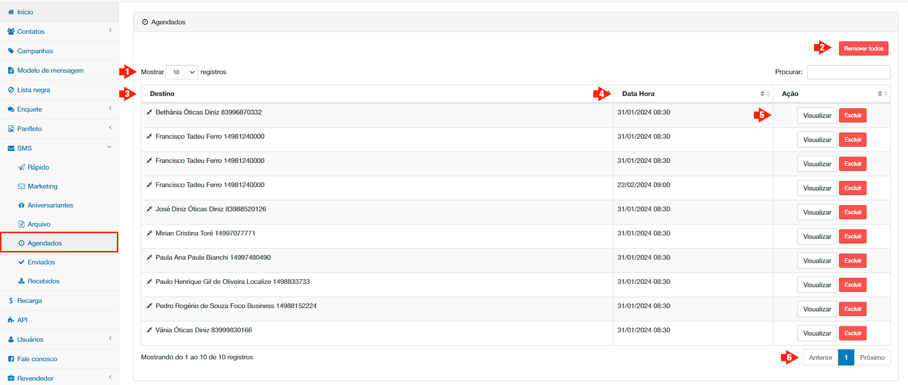
Tela SMS Agendados
A tela mostra a relação de mensagens agendadas cadastrados, sendo possível a exclusão de cada uma delas, rolagem de tela, navegação por páginas e configuração da quantidade de mensagens agendadas mostradas por página.
Na caixa suspensa Mostrar Registros, mostrada pela seta (1) é possível configurar a quantidade de indivíduos que serão mostrados em cada janela, podendo ser de 10, 25, 50 e 100.
É possível ainda, clicando no rótulo “Destino”, evidenciada pela seta (3) ou “Data Hora”, indicada pela seta (4), acima da coluna que lista as mensagens, ordená-las em ordem alfabética, crescente ou decrescente.
Clicando no botão Remover todos, cancelamos de uma só vez, o envio de todas as mensagens agendadas.
A coluna ação, por sua vez, evidenciada pela seta (5), possui dois botões; clicando no botão Visualizar, é possível para o usuário ler o conteúdo da mensagem agendada para remessa ao destinatário, clicando no botão Excluir é possível para o usuário remover mensagens individualmente, segundo o desejo do mesmo.
OBSERVAÇÃO:
Para contatos cadastrados na plataforma, aparecerão os nomes na coluna destino, para aqueles, cujas mensagens foram agendadas sem o cadastramento do contato, aparecerão apenas o número do telefone.
SMS Enviados
Nesta opção o usuário consegue verificar as mensagens enviadas, classificadas pelo status de envio.
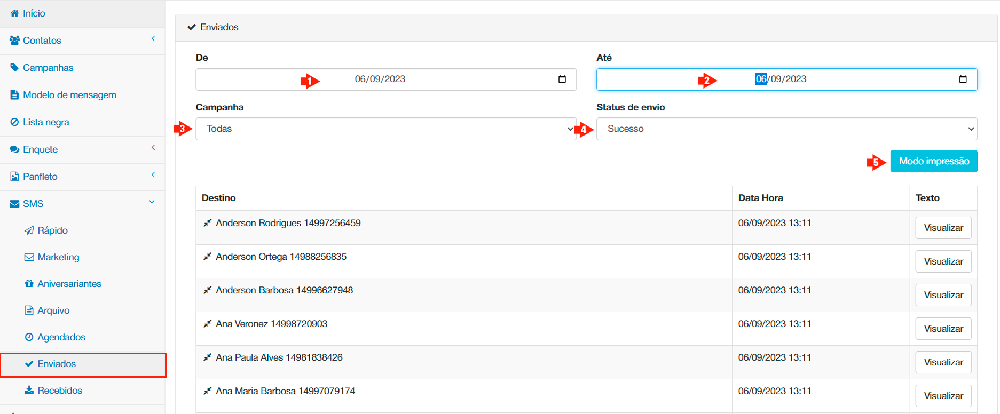
Mensagens enviadas
Para isso, o usuário deve selecionar o período que deseja fazer a checagem nos campos “De”, sinalizado na tela pela seta (1) e “Até”, mostrado na tela pela seta (2), lembrando-se que para tanto o usuário deverá clicar no icone de calendário, posicionado a direita do menu de caixa suspensa.
Feito isso, o usuário póderá optar por ver todas as mensagens enviadas daquele períod escolhido, ou filtrar por campanha, bastando para isso deixar a caixa suspensa "Campanhas", indicada na tela pela seta (3) em Todas ou escolher uma das campanhas que o menu disponibilizar. Finalmente, o usuário deverá escolher um dos itens na janela “Status de Envio” que disponibiliza as seguintes situações:
Aguardando
Sucesso
Falhou
Sem Saldo
OPTOUT
A funcionalidade apresentará as mensagens do período que se encaixam no "Status" escolhido, organizados por “Destino”, “Data Hora” e “Texto”. Clicando em qualquer um dos dois primeiro rótulos, “Destino” e “Data Hora” a tabela será indexada por aquela coluna.
Ao passar o mouse ou clicar pelo botão “Visualizar” da coluna “Texto”, o usuário poderá ver o conteúdo da mensagem.
OBSERVAÇÃO:
Para contatos cadastrados na plataforma, aparecerão os nomes na coluna “Destino”, para aqueles, cujas mensagens foram enviadas sem o cadastramento do contato, aparecerão apenas os números dos telefones.
Somente mensagens com o status “Sucesso” fará a instituição ter a remessa abatida de seu saldo.
SMS Recebidos
Nesta tela o usuário pode checar os SMS recebidos como resposta dos contatos, destinatários de campanhas já enviadas.
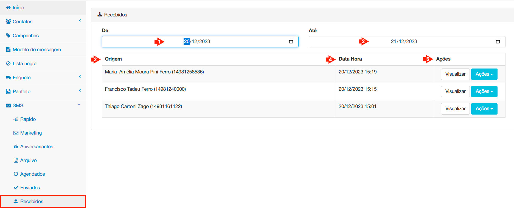
Mensagens recebidas
Para tanto, basta o usuário selecionar o período, preenchendo, tal qual a opção SMS Recebidos, os campos “De”, indicado pela seta (1) e “Até”, mostrada na tela pela seta (2). Imediatamente o sistema mostrará uma tabela com as respostas recebidas agrupadas em três colunas: “Origem”, identificada na tela pela seta (3), “Data Hora”, apontada na tela pela seta (4) e “Ações”, evidenciada pela seta (5).
Clicando em qualquer um dos dois primeiro rótulos, “Origem” e “Data Hora” a tabela será indexada por aquela coluna.
Ao passar o mouse ou clicar pelo botão “Visualizar” da coluna “Ações” o usuário poderá ver o conteúdo da mensagem recebida do contato.
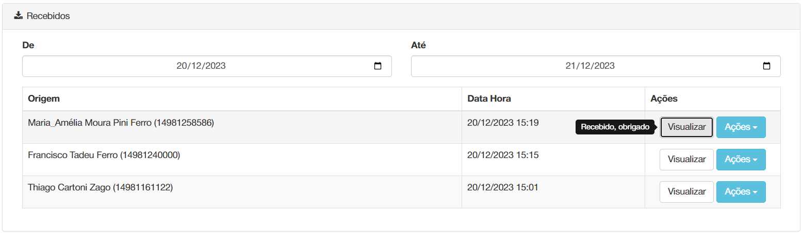
Visualizar mensagem recebida
E, por outro lado, ao clicar no botão Ações é possível para o usuário responder aquela mensagem para o contato que a enviou, ou marcar o usuário na lista de OPTOUT, no caso do conteúdo de mensagem respondida expressar o desejo de parar de receber mensagens de sua instituição.
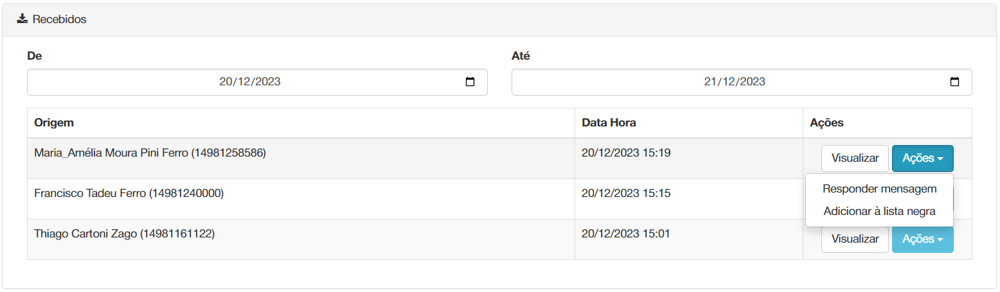
Opção do botão Ações
OBSERVAÇÃO:
Para contatos cadastrados na plataforma, aparecerão os nomes na coluna “Origem”, para aqueles, cujas mensagens foram enviadas sem o cadastramento do contato, aparecerão apenas os números do telefone.
Ao lado do botão visualizar, o usuário encontra o botão Responder, que permite com uma simples clicada responder a mensagem do contato, continuando assim a comunicação e sanando eventuais dúvidas.